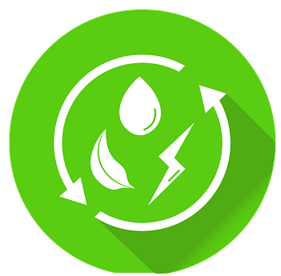
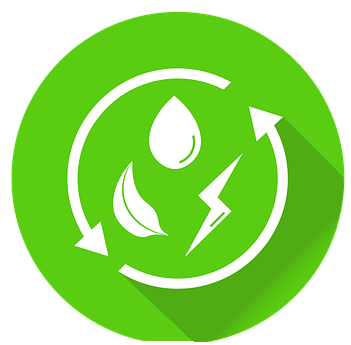

ECONOMIA SUSTENTAVEL
com simples ações você pode ajudar o mundo
 



Projeto Economia Sustentável
O objetivo do projeto Economia Sustentável é mostrar e conscientizar as pessoas sobre ações simples e sustentáveis que podem ser incorporadas no dia a dia para colaborar de forma positiva com o meio ambiente, sem gerar gastos adicionais.
Por meio deste site, queremos demonstrar que é possível cuidar do planeta com atitudes acessíveis e práticas, que dependem muito mais de consciência e hábitos do que de dinheiro.
Aqui você encontrará explicações detalhadas sobre cada ação sustentável, dicas para aplicá-las em casa, no trabalho ou na escola, e exemplos de como pequenas mudanças podem causar grandes impactos na preservação dos recursos naturais e na melhoria da qualidade de vida de todos.
Nosso propósito é inspirar atitudes responsáveis, incentivar a redução do desperdício e promover uma relação mais equilibrada entre as pessoas e o meio ambiente — tudo isso de forma gratuita, simples e transformadora.